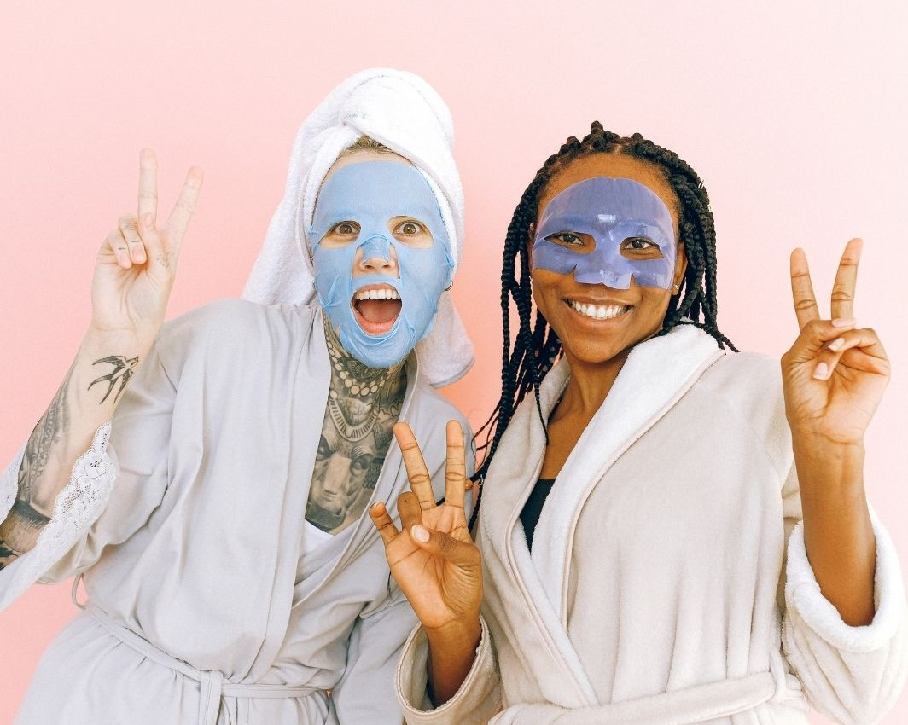

El ‘boom’ de las mascarillas faciales continúa: Aquí 15 que deberías probar
Hasta hace poco tiempo, las mascarillas estaban destinadas a un momento excepcional: a ese ratito de los domingos, antes de una celebración, que dedicábamos a la búsqueda de una piel —un poco más— perfecta. Sin embargo, ahora este producto facial con múltiples utilidades está en pleno boom y su uso se ha expandido al día, a la noche y al hedonismo. Además, su incorporación a los catálogos de muchísimas marcas, la bajada de los precios y la diversidad de funciones que cumplen, ayuda.
Así lo confirma hasta el extremo la jefa de belleza de Vogue España, Paloma Abad, que prueba todas las semanas una mascarilla en su cuenta de Instagram bajo la etiqueta #Domingodemascarilla. Para esta insider, el componente hedonista también es fundamental. “Haces algo por ti, "pierdes el tiempo" sin en realidad perderlo, porque a la vez estás viendo la tele o leyendo un libro”, opina. Asegura que “llevan un par de años en pleno auge porque entroncan con la idea de inmediatez, de algo que usas ya y funciona ya con resultados visibles"
